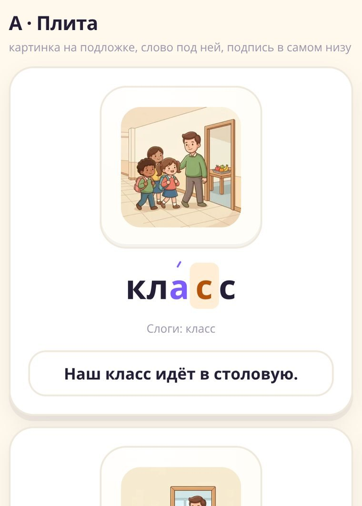
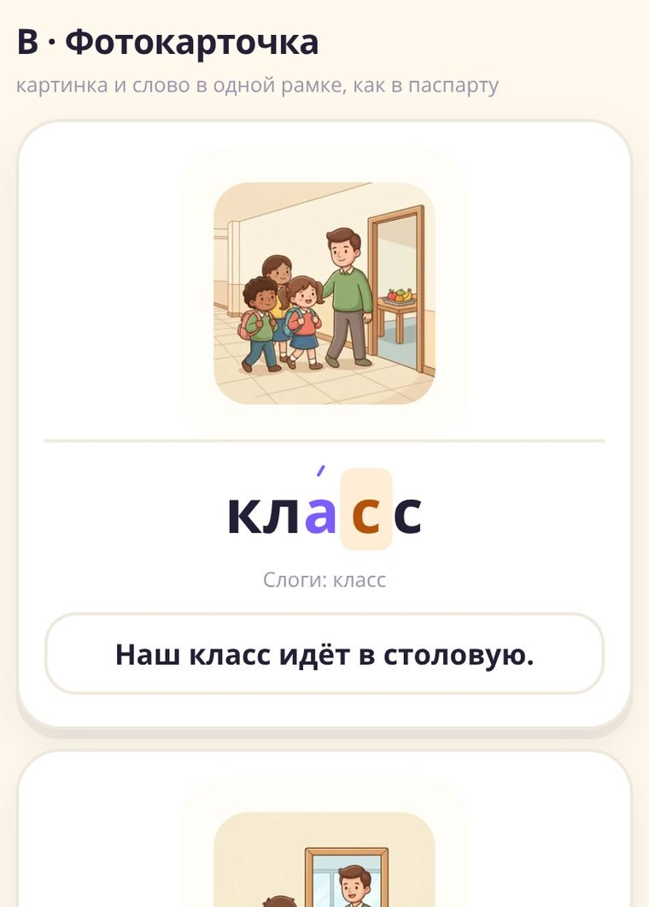
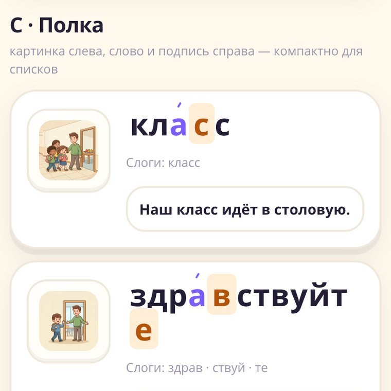
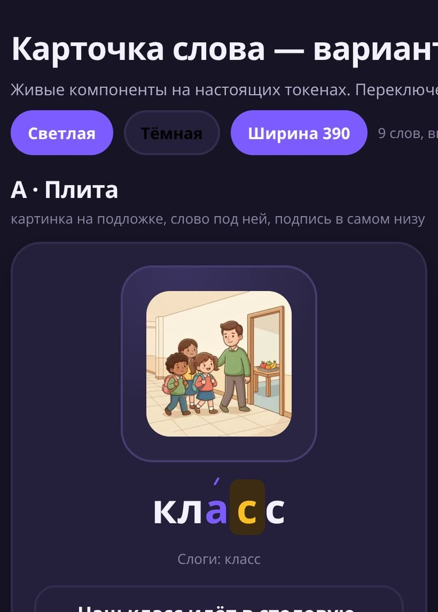
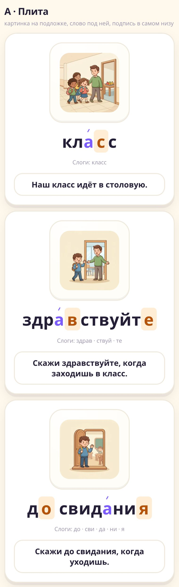
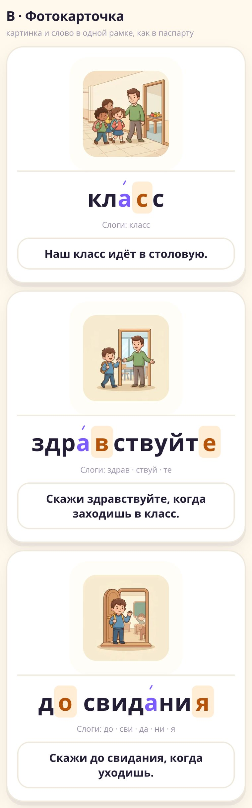
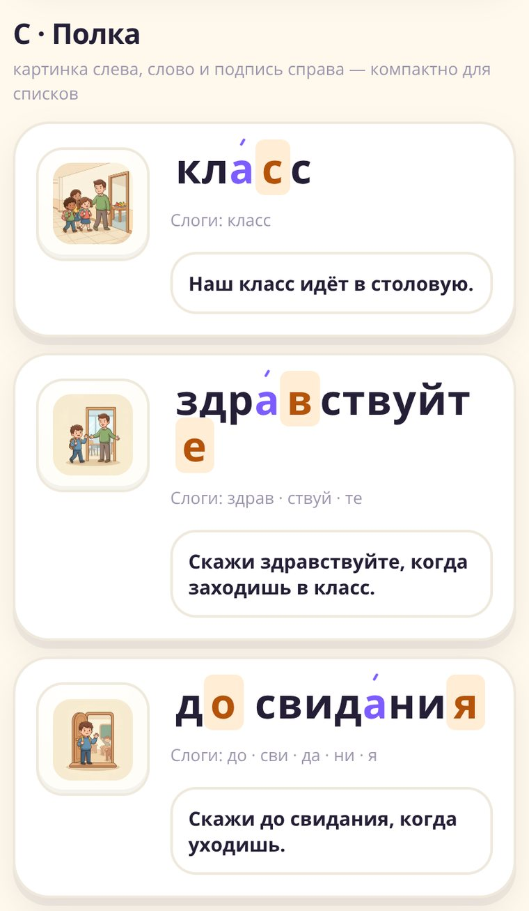
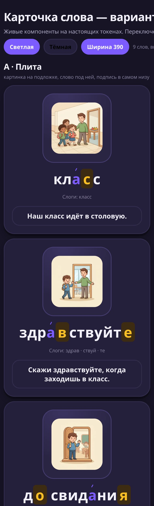

- Плюсы: привычное чтение сверху вниз, подпись не спорит с картинкой, работает при любой длине слова.
- Минус: самая высокая карточка — на низких экранах нужна прокрутка.
- Где уместен: знакомство в уроке, экран слова, итоги.

- Плюс: самая сильная связка «образ ↔ слово» — слово выглядит частью картинки.
- Минус: в тёмной теме паспарту нужно держать светлым, иначе картинка «висит в воздухе».
- Где уместен: экран слова, будущая «коллекция слов».

- Плюс: компактно — 6–8 слов на экран, длинные слова переносятся аккуратно.
- Минус: картинка мелкая, для запоминания слабее.
- Где уместен: словарик, повторение, поиск.

- Светлые картинки на тёмной плите пока читаются как «стикеры» — кандидат на следующую доработку (свести фоны 94 картинок к одному тёплому).